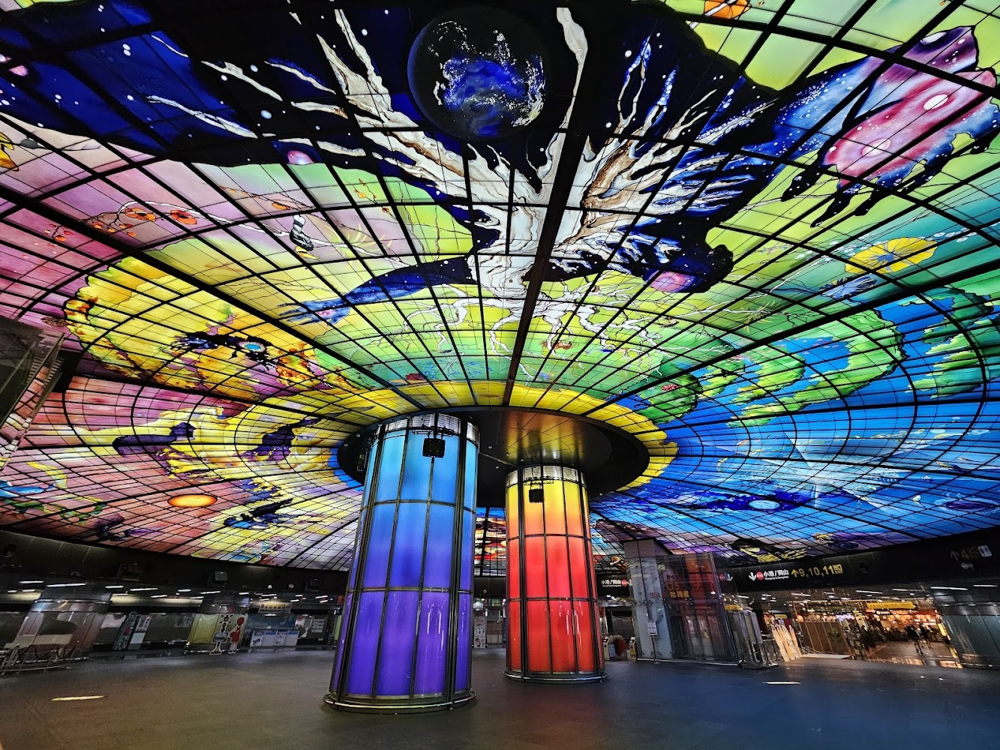
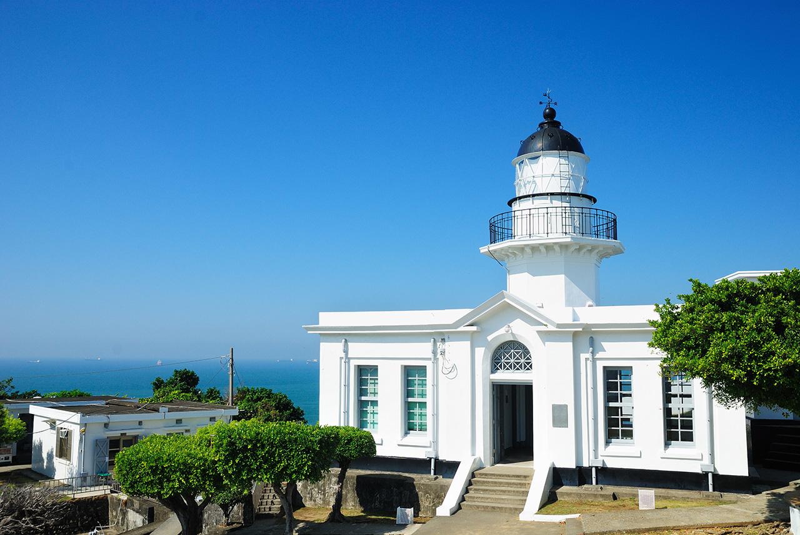
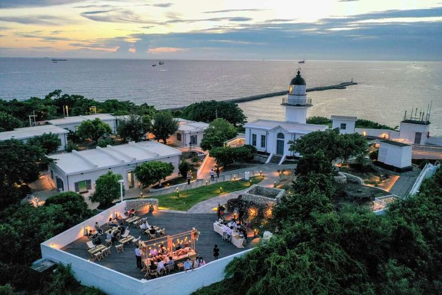
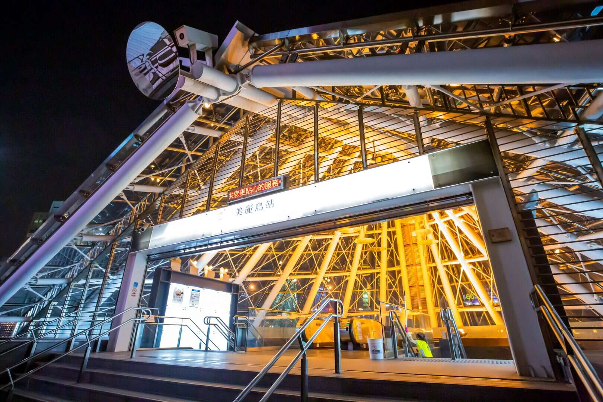
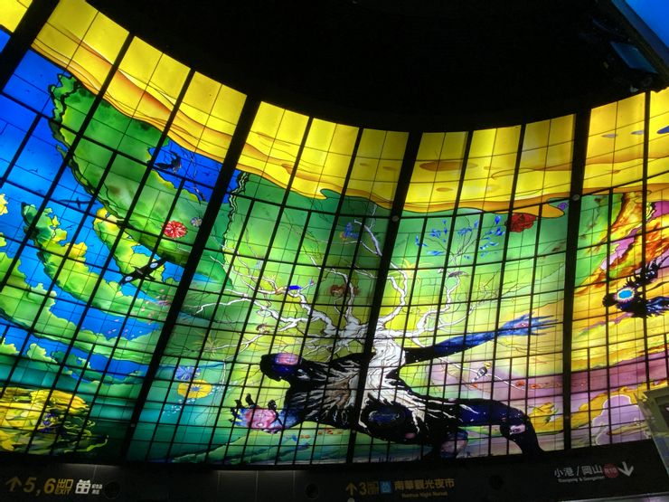
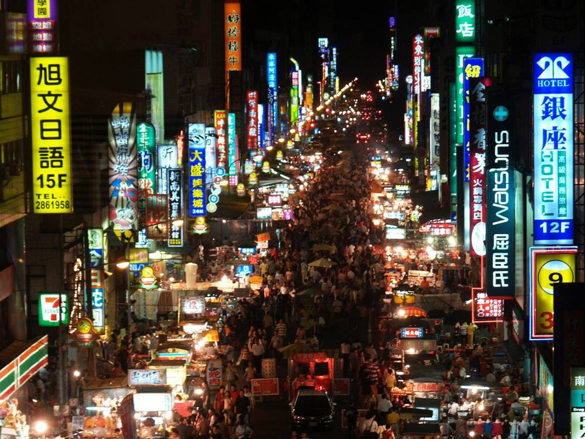
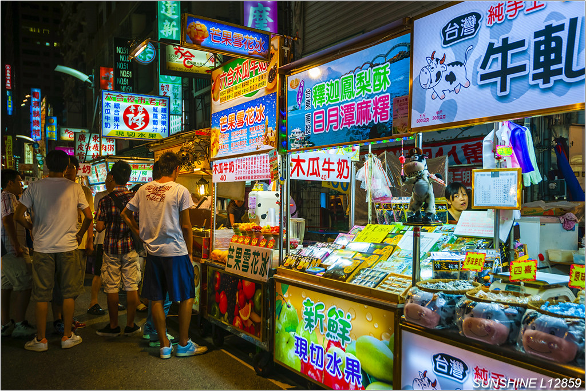

台南 | 高雄 | 2025 3日文化美食之旅

航空交通
從香港前往高雄的航空交通十分便利，兩地之間有多家航空公司提供直航航班，平均飛行時間約1.5至2小時 主要承運航空公司包括國泰航空、香港快運、華信航空、中華航空、長榮航空等。
其中，香港快運（HK Express）常提供低價優惠，適合精打細算的旅客。 而國泰、中華航空與長榮則提供更完整的服務與舒適度。
房間住宿
高雄作為台灣南部的重要城市，住宿類型涵蓋五星級酒店、精品旅館、商務飯店、 民宿以及青年旅館。若追求舒適與便利， 市中心的國際酒店如漢來大飯店或洲際酒店提供完善設施，包括游泳池、 健身房與高樓景觀房，適合家庭或商務旅客。精品旅館則以設計感取勝， 常位於駁二藝術特區或鹽埕區，讓旅客能在住宿中感受在地文化氛圍。
對於預算有限的旅客，民宿與青年旅館是理想選擇。高雄的民宿多位於捷運沿線， 交通方便，房間溫馨且價格親民；青年旅館則提供床位或多人房， 適合背包客或短期停留。若計劃長住，高雄也有服務式公寓， 提供廚房與洗衣設備，讓旅客能像在家一般自在。
歷史與文化
高雄早期被稱為「打狗」，原為平埔族馬卡道族的居住地。15世紀時， 族人為防禦海盜而遍植刺竹，形成「竹林」聚落。隨著漢人移民進入， 地名逐漸被漢化為「打狗」。在荷治、明鄭與清治時期，高雄逐漸發展為漁業與農業重鎮。 到了日治時期，因「打狗」音近日本高雄山，總督府將地名改為「高雄」， 並開始大規模港口建設，使其成為台灣南部的重要工業與商業中心
文化方面，高雄兼具傳統與現代。原住民文化仍在地方祭典與語言中保存， 例如馬卡道族的傳統故事與祭儀。日治時期留下的建築，如鹽埕町的街屋與銀座商場， 至今仍是文化資產的一部分。戰後，高雄因港口與重工業發展而快速都市化， 但同時也孕育了獨特的在地文化，包括廟會、夜市、美食，以及駁二藝術特區等新興文化空間。
總體而言，高雄的歷史與文化是一段從原住民聚落、殖民時期到現代港都的演變過程， 既保留傳統，又展現創新，讓旅客能在城市中同時感受古今交融的魅力。
必訪景點
-
🌅 高雄燈塔
位於旗津的高雄燈塔，最初建於 1883 年，後於 1918 年重建。 白色圓形塔身優雅，矗立在山丘上，能俯瞰高雄港與海景。 這裡是欣賞夕陽的絕佳地點，旅人可沿著步道登頂，感受海風與歷史氛圍。 燈塔不僅是航海指引，更是旗津的重要地標。


-
🌈 光之穹頂（美麗島捷運站）
光之穹頂位於美麗島捷運站，是世界最大的玻璃公共藝術， 由義大利藝術家 Narcissus Quagliata 創作。 直徑 30 公尺，色彩鮮豔，描繪宇宙、生命與人類精神。 旅人走進車站，仿佛置身光影藝術殿堂。這裡常成為拍照打卡的熱門景點，也是高雄文化象徵之一。


-
🛍️ 六合夜市
六合夜市是高雄最具代表性的夜市之一，位於市中心，交通便利。 攤位林立，販售海鮮、牛排、木瓜牛奶等在地美食。 夜晚人潮湧動，燈火通明，展現南台灣的熱情氛圍。 旅人可在此品嚐地道小吃，感受高雄夜生活的活力，是必訪的美食天堂。

